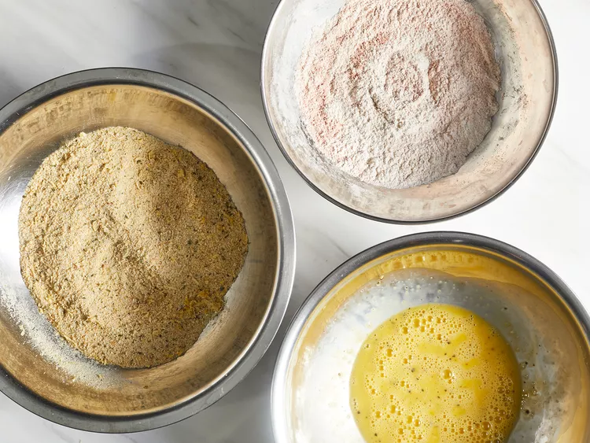

Chicken Schnitzel Recipe
Home

Description
Schnitzel is a thin slice of meat which is breaded, then fried.
Resulting in a crispy on the outside, tender and juicy inside.
Ingredients
Recipe yields 6 servings
- 1 tbsp oil
- Flour
- 6 chicken breasts butterflied
- Salt and ground black pepper to taste
- 1 tbsp paprika
- Two large eggs beaten
- Seasoned bread crumbs
- 1 large lemon, zested
Directions
- Gather your ingredients
- Preheat your oven to 220°c (425°F)
- Preheat the oven to 425 degrees F (220 degrees C). Line a large baking sheet with aluminum foil;
drizzle olive oil over foil. Place the baking sheet in the oven as it preheats.
- Meanwhile, place chicken breasts between 2 sheets of plastic wrap on a solid, level surface. Firmly pound with the smooth side of a meat mallet to ¼-inch thickness.
Season both sides with salt and black pepper.
- Combine flour and paprika in a shallow bowl. Whisk eggs, salt, and black pepper together in a second shallow bowl.
Combine bread crumbs and lemon zest in a third shallow bowl.

- Dredge 1 piece chicken in flour; shake off excess. Dip into beaten egg. Lift up so excess egg drips back in the bowl. Press into bread crumbs to coat both sides.
Place breaded chicken, unstacked, onto a plate. Repeat with remaining chicken.
- Remove the baking sheet from the oven.
Arrange chicken in a single layer on the hot baking sheet; drizzle more olive oil over each piece.
- Bake in the preheated oven for 5 to 6 minutes. Flip chicken; continue baking until no longer pink in centers and the breading is lightly browned, 5 to 6 minutes more.
An instant-read thermometer inserted into centers should read at least 165 degrees F (74 degrees C).
- Serve and enjoy.
Recipe Tip
Placing the pan in the oven while it preheats ensures it is hot before the chicken even touches it —
this ensures that the breading gets extra crispy during cooking
| Calories |
383 |
| Fat |
9g |
| Carbs |
40g |
| Protein |
33g |